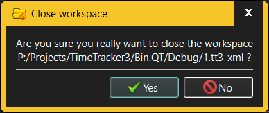

The Close Workspace dialog is invoked when the user wants to close the currently active workspace.

The dialog offers no fields that the user can interact with - it's a simple yes or no question for increased workflow security - if any Activity is in the process of being recorded, its recording will stop (and the corresponding Work unit will be logged) before the workspace is closed.
See also: -